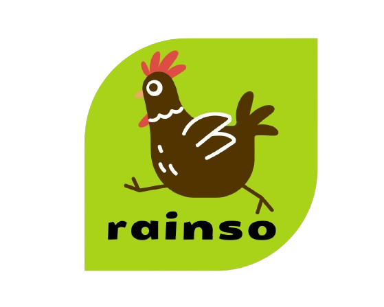

OKAFOR AGRISCIENCE
Science that
nourishes.
Advancing agriculture through science, innovation and practical solutions for farmers.
OUR IMPACT
We are building agricultural solutions designed to create meaningful results for farmers and food production.
Farmers reached
Acres supported
Agricultural solutions
States reached
SUSTAINABILITY
Every harvest depends on the soil, water, people and communities around us.
We believe agriculture should not only feed today — it should preserve the ability to grow tomorrow.
That is why we support solutions that help farmers produce responsibly, use resources wisely and build a stronger future for agriculture.
FOR FARMERS
Farming comes with risks, changing conditions and new challenges every season.
Farmers need more than products. They need solutions that work.
We bring together agricultural science, practical knowledge and the right solutions to help farmers protect their crops, improve their animals and grow with greater confidence.
Because when farmers succeed, agriculture moves forward.
ABOUT OKAFOR AGRISCIENCE
Okafor Agriscience is a life science company focused on agricultural solutions and technology for farmers.
We combine scientific knowledge, innovation and practical understanding of farming to support better crop and animal production.
Discover our science →WHAT WE DO
Solutions designed around the needs of farmers and modern food production.
Solutions for protecting crops from pests, diseases and weeds.
Explore →Fertilizers and micronutrient solutions supporting healthy crop growth and productivity.
Explore →Quality seeds and improved varieties for productive farming.
Explore →Solutions supporting poultry and swine health, nutrition and production.
Explore →FARM TECHNOLOGY
Agriculture is becoming increasingly connected, automated and data-driven.
Okafor Agriscience explores technologies that help farmers improve efficiency, production and farm management.
OUR SCIENCE
We apply scientific thinking across agriculture to develop better solutions for crops, animals and food production.
Science focused on crop productivity, plant health, nutrition and protection.
Learn more →Science focused on animal health, nutrition, performance and production.
Learn more →Breeding and genetic improvement for crops and animals.
Learn more →Applying technology and automation to improve agricultural production.
Learn more →OUR BRANDS
Our brands are built around specific agricultural needs and opportunities.
Vegetable seeds.
Visit brand →
Poultry and layer genetics.
Visit brand →Swine genetics and production.
Visit brand →WHERE TO BUY
Our products are distributed through selected agricultural retailers and partners.
Find a dealer near you and get access to Okafor Agriscience solutions.
Find a dealerRetailer locations and contact information will appear here.
INSIGHTS
Practical ideas and knowledge from agriculture and agricultural science.
CONTACT
Connect with Okafor Agriscience for agricultural solutions, distribution and business enquiries.